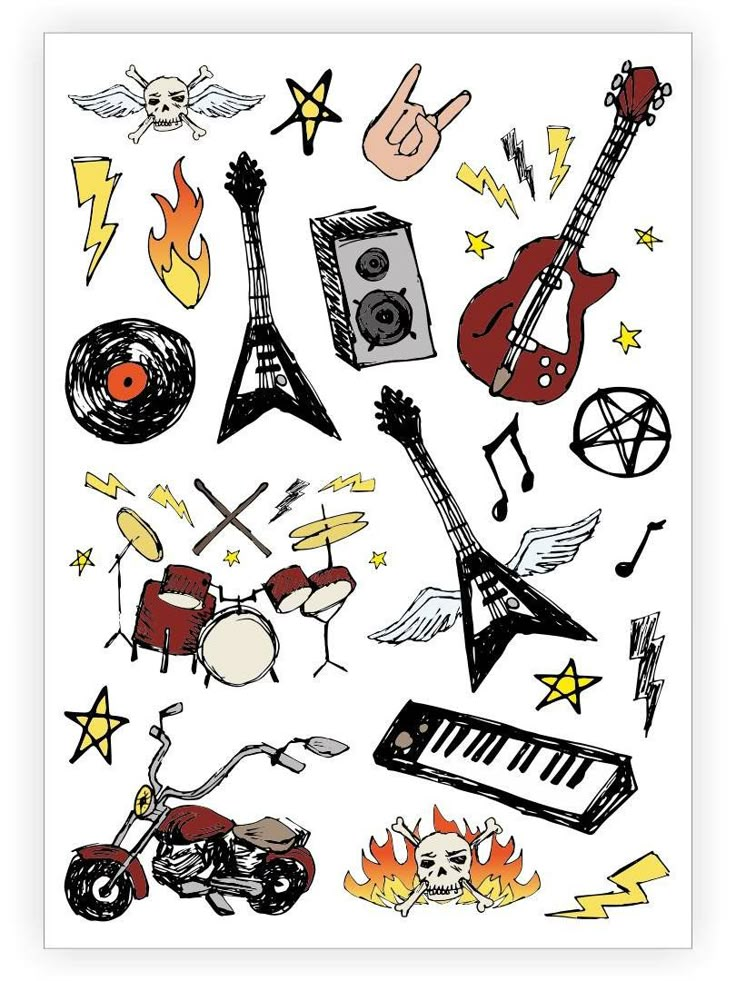
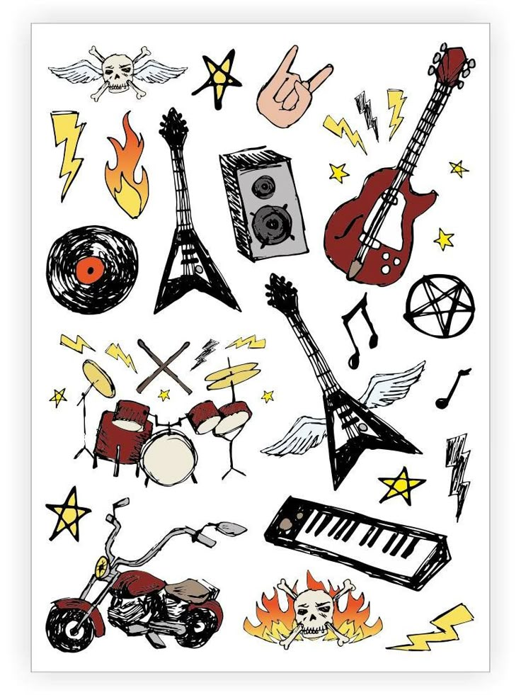

Music
I love playing guitar and listening to rock bands.
I love playing guitar and listening to rock bands.
I enjoy watching mystery, horror, and sad, deep movies especially at night before sleep. I also like movies about addiction and social problems